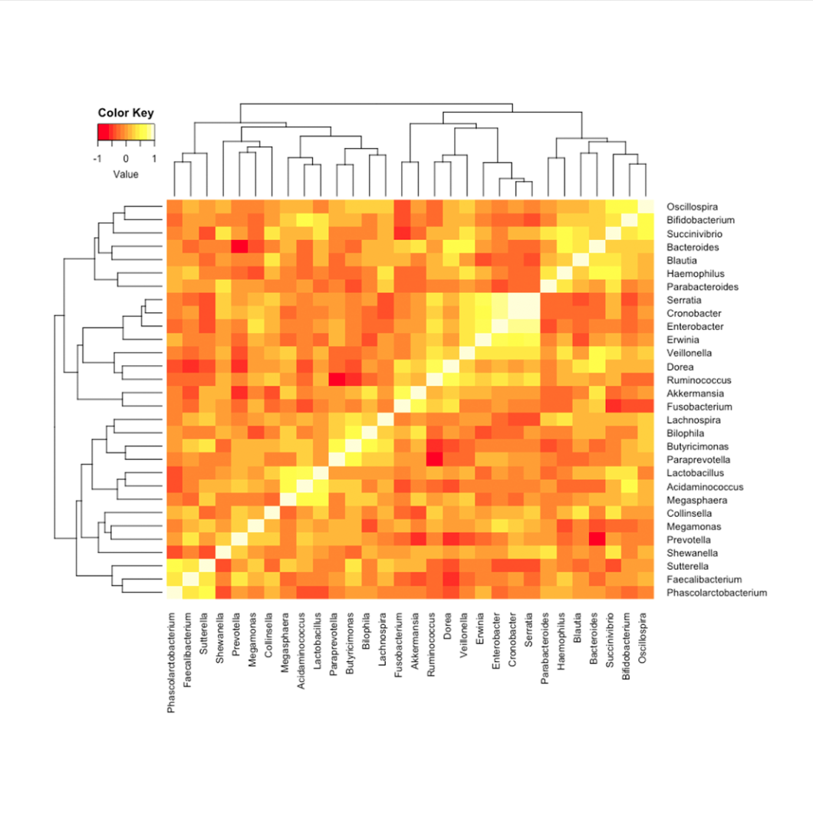
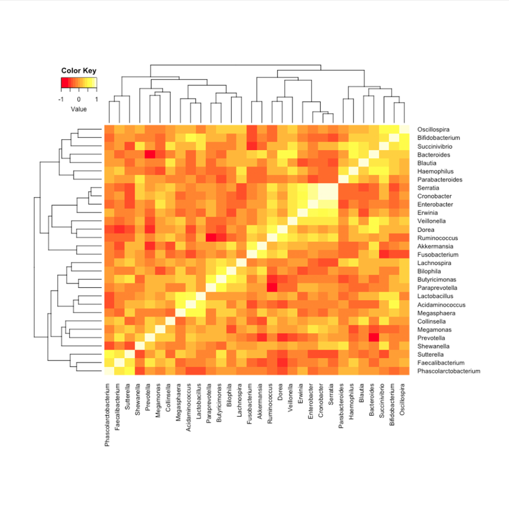
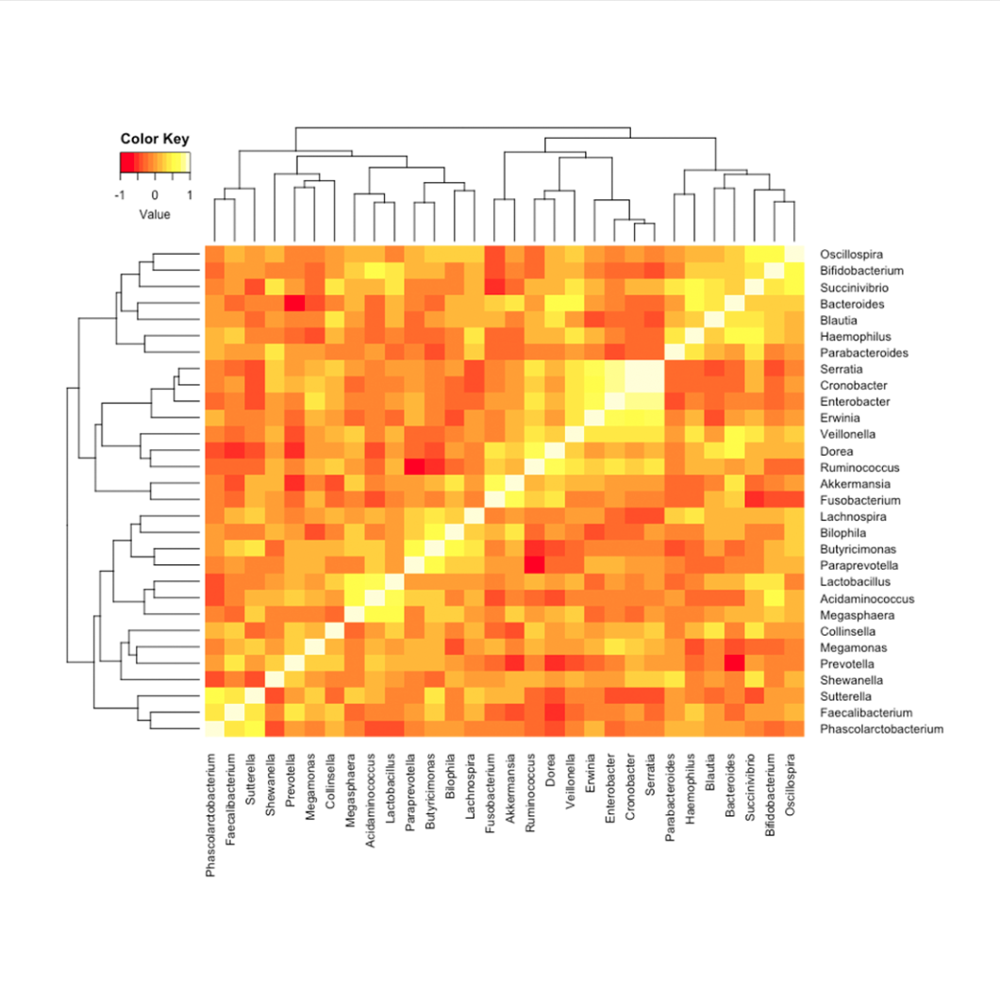
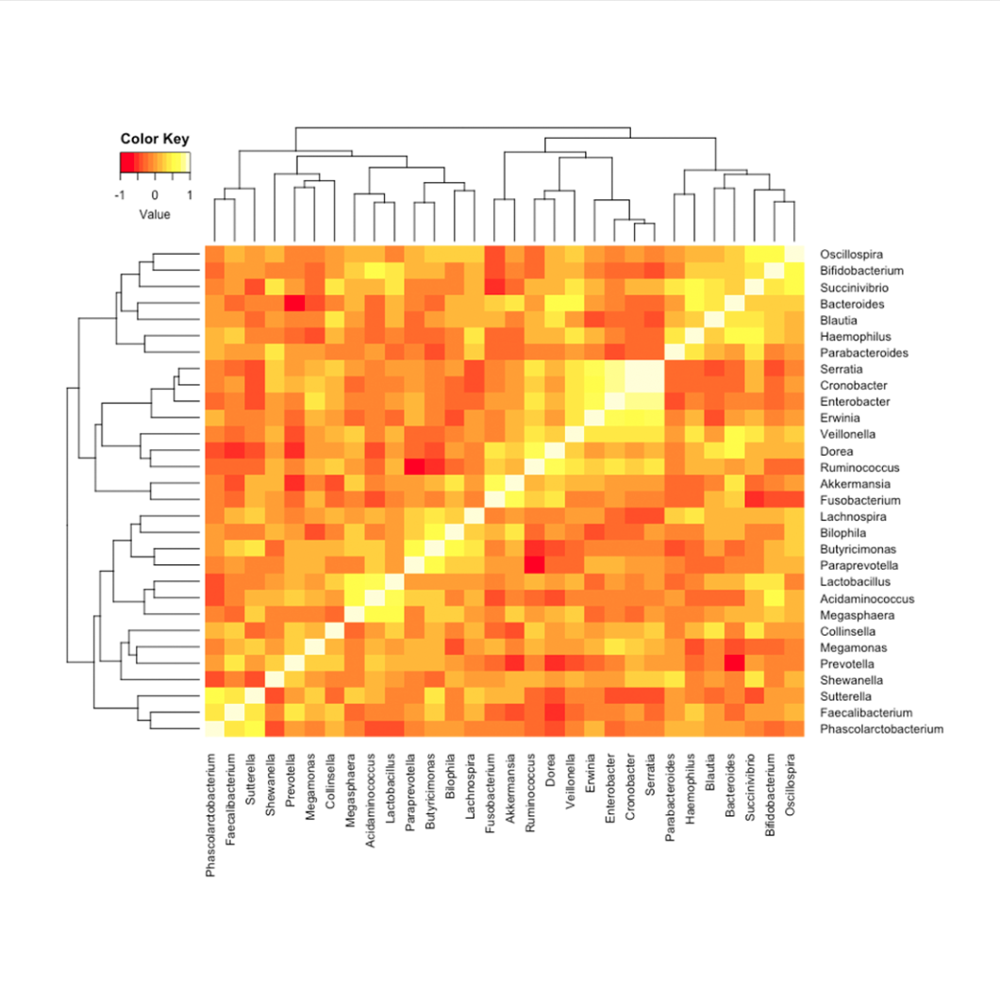
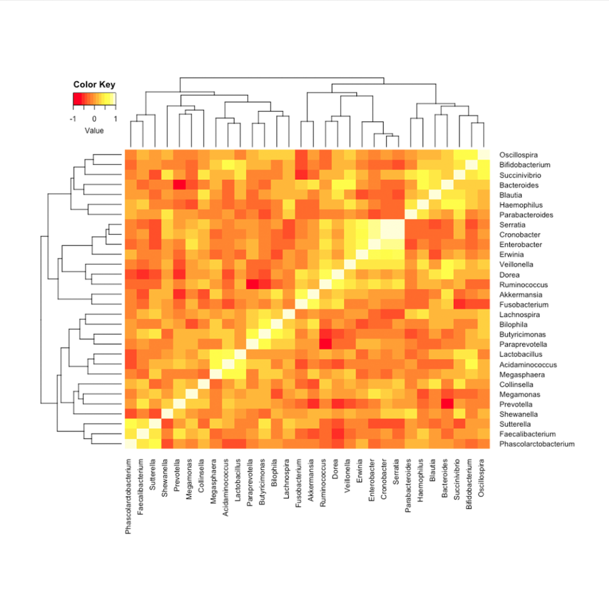

AC
ABOUT
PROJECT
FEATURE
ALEC
I'm
ALEC WANG
PRESS ME
ABOUT
從小熱愛藝術，對於科技無所抵抗，自從開始從事分析數據的研究後，對程式的熱愛就變得一發不可收拾。曾幫助過新創企業打照良好視覺體驗的形象網站，也在校內擔任網管及程式課程助教，在就學期間架設及管理過數個學術平台，能夠協助公司設計良好架構及良好使用者體驗的平台。
求知若渴，熱愛學習最新知識，讓科技走向最前端。
ACADEMIC EXPERIENCE
2018
2017
2016
MORE
2016
07月 飛輪教練執照
07月 iThome實習工讀
07月 國立交通大學-分子醫學與生物工程研究所
06月 國立海洋大學畢業-專題: 褐藻糖膠之傷口敷料製備
HACCP證照
2017
08月 miRTarBase database paper 共同作者
08月 交大科法所網站架設及設計
06月 SNMG交大生科院網管小組
2018
09月 兵役 南投醫院-醫療役
08月 交大畢業-碩論: 慢性腎臟病菌相檢測套組開發（軟體）
02月 交大創業學程結業
02月 新創公司網站架設形象設計
02月-06月 交大程式設計課助教（ Python ）
Know More
PROJECT
生物資訊年會活動網站
Google API
Google Drive
More
1914品牌網站
品牌設計
產品設計
More
illustration
UI/UX設計
平面設計
More
氣象網頁APP
API串接
React.js
More
Line 客服機器人
Dialogflow API
Line API
More
機器學習顏色校正
Brain.js
Color Picker
More
R語言統計分析
企業資料分析
生物資訊分析
More
口試茶點準備評估系統
Vue.js
計算帶入E-mail
More
作品集進化史
設計風格演進
程式能力精進
More
數據分析
購物車按鍵影響購買因素分析
透過不同國家及裝置等多種資料進行分析，以不同兩組的購物車按鍵顏色做區分，討論購物車按鍵顏色是否會影響使用者購買商品，或是因為各國風俗名情的不同，或不同裝置下導致的購買行為不同，使用boxplot、線圖及曲面圖去做視覺化分析。
慢性腎臟病 (CKD) 與正常人的腸道菌相差異生物資訊分析

透過正常人與慢性腎臟病病人的腸道菌相檢體做分析，透過 16s ribosome RNA 定序後得到的 data，做clustering，得到的結果做OTU table (operational taxonomic units)，每一個 OTU 代表一種細菌，並將兩組進行比較，透過 PCA 及 PCoA 看兩組的距離是否相近，相近代表菌相上沒有顯著差異，而距離越遠代表顯著差異越明顯。再透過 Heatmap 圖去看兩組菌相與菌相之間是否有相關性，是否細菌與細菌之間有相似的表現及關係，最後針對選出來的菌屬查看再兩組之間的相對豐富程度是否有差異。
UIX Project
Line Chatbot with Dialogflow
利用 dialogflow 接到 Line Devloper API，即時回覆客人訊息，透過自然語言處理，將相似的語意作為歸類，客服機器人將會正確回答客人的需求。而小香機器人為 1914 品牌的客服機器人，將會回答產品相關問題及貨物運送問題。
教學經驗
前端課程講師
HTML / CSS 網頁排版
jQuery 網頁互動設計
響應式設計 RWD
HTML 模板語言 pug
CSS 模板語言 SASS
Boostrap
Git
資料分析流程講師
R 統計分析
Python Pandas 統計分析
多變量分析
Feature
我是一個知道自己想要什麼，並且全力以赴的人，勇敢追求不安逸的理想，並且征服它。 從碩班做資料科學出來，跨足了資工領域讓我拓展新的大陸，對於前端及後端有了全新的視野，在之前一直沒有機會參與程式的團隊合作，一直很嚮往一群人能夠朝著目標發展，共同成長努力。希望接下來的職涯能夠更精進技術，同時能夠參與各種團隊合作，對於工作上的需求我都非常樂意配合，並勇於學習及面對挑戰。
PRESS ME
Check Me Out
EMAIL
NAME
MESSAGE


 
 
